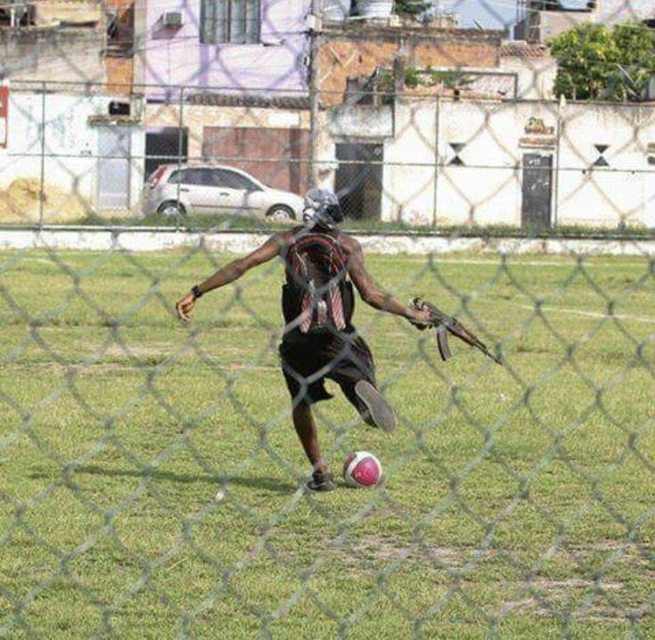
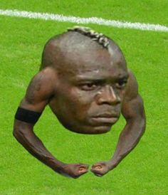
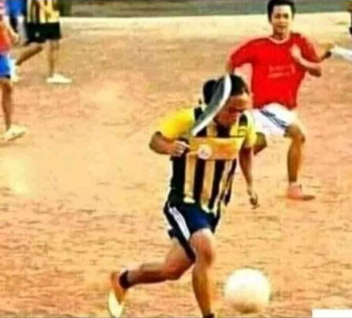

Humaitá Bolão



Futebol todas as quartas-feiras às 19:00. Aquidabã - Rua Aquidabola, 420.
O que você precisa saber:
- Aparentemente, nosso campo é localizado em uma zona dimensional instável, ou seja, jogadores podem ser enviados a outras realidades durante a partida.
- Nossos torcedores consistem em figuras sombrias e silenciosas, que observam o jogo sem expressão mas aparentam possuir conhecimento profundo do jogo. Recomendamos não interagir com eles.
- O árbitro é uma entidade invisível que se comunica por escrita em um idioma desconhecido para nós. Suas decisões podem, muitas vezes, ser misteriosas e imprevisíveis.
- Os jogadores que cometerem faltas graves serão decapitados em campo.
Agradecemos sua visita!